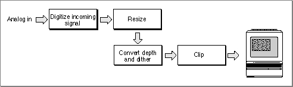
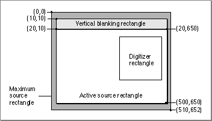

About Video Digitizer Components
Video digitizer components convert video input into a digitized color image that is compatible with the graphics system of a computer. For example, a video digitizer may convert input analog video into a specified digital format. The input may be any video format and type, whereas the output must be intelligible to the Macintosh computer's display system. Once the digitizer has converted the input signal to an appropriate digital format, it then prepares the image for display by resizing the image, performing necessary color conversions, and clipping to the output window. At the end of this process, the digitizer component places the converted image into a buffer you specify--if that buffer is the current frame buffer, the image appears on the user's computer screen.Figure 8-1 shows the steps involved in converting the analog video signal to digital format and preparing the digital data for display. Some video digitizer components perform all these steps in hardware. Others perform some or all of these steps in software. Others may perform only a few of these steps--in which case, it is up to the program that is using the video digitizer to perform these tasks.
Figure 8-1 Basic tasks of a video digitizer

Video digitizer components resize the image by applying a transformation matrix to the digitized image. Your application specifies the matrix that is applied to the image. Matrix operations can enlarge or shrink an image, distort the image, or move the location of an image. The Movie Toolbox provides a set of functions that make it easy for you to work with transformation matrices. See the chapter "Movie Toolbox" in Inside Macintosh: QuickTime for more information about matrix operations.
Before the digitized image can be displayed on your computer, the video digitizer component must convert the image into an appropriate color representation. This conversion may involve dithering or pixel depth conversion. The digitizer component handles this conversion based on the destination characteristics you specify.
Video digitizer components may support clipping. Digitizers that do support clipping can display the resulting image in regions of arbitrary shapes. See the next section for a complete discussion of the techniques that digitizer components can use to perform clipping.
Types of Video Digitizer Components
Video digitizer components fall into four categories, distinguished by their support for clipping a digitized video image:Basic video digitizer components are capable of placing the digitized video into memory, but they do not support any graphics overlay or video blending. If you want to perform these operations, you must do so in your application. For example, you can stop the digitizer after each frame and do the work necessary to blend the digitized video with a graphics image that is already being displayed. Unfortunately, this may cause jerkiness or discontinuity in the video stream. Other types of digitizers that support clipping make this operation much easier for your application.
- basic digitizers, which do not support clipping
- alpha channel digitizers, which clip by means of an alpha channel
- mask plane digitizers, which clip by means of a mask plane
- key color digitizers, which clip by means of key colors
Alpha channel digitizer components use a portion of each display pixel to represent the blending of video and graphical image data. This part of each pixel is referred to as an alpha channel. The size of the alpha channel differs depending upon the number of bits used to represent each pixel. For 32 bits per pixel modes, the alpha channel is represented in the 8 high-order bits of each 32-bit pixel. These 8 bits can define up to
256 levels of blend. For 16 bits per pixel modes, the alpha channel is represented in the high-order bit of the pixel and defines one level of blend (on or off).Mask plane digitizer components use a pixel map to define blending. Values in this mask correspond to pixels on the screen, and they define the level of blend between video and graphical image data.
Key color digitizer components determine where to display video data based upon the color currently being displayed on the output device. These digitizers reserve one or more colors in the color table; these colors define where to display video. For example, if blue is reserved as the key color, the digitizer replaces all blue pixels in the display rectangle with the corresponding pixels of video from the input video source.
Source Coordinate Systems
Your application can control what part of the source video image is extracted. The digitizer then converts the specified portion of the source video signal into a digital format for your use. Video digitizer components define four areas you may need to manipulate when you define the source image for a given operation. These areas areFigure 8-2 shows the relationships between these rectangles.
- the maximum source rectangle
- the active source rectangle
- the vertical blanking rectangle
- the digitizer rectangle
Figure 8-2 Video digitizer rectangles

The maximum source rectangle defines the maximum source area that the digitizer component can grab. This rectangle usually encompasses both the vertical and horizontal blanking areas. The active source rectangle defines that portion of the maximum source rectangle that contains active video. The vertical blanking rectangle defines that portion of the input video signal that is devoted to vertical blanking. This rectangle occupies lines 10 through 19 of the input signal. Broadcast video sources may use this portion of the input signal for closed captioning, teletext, and other nonvideo information. Note that the blanking rectangle might not be contained in the maximum source rectangle.
You specify the digitizer rectangle, which defines that portion of the active source rectangle that you want to capture and convert.
Subtopics
- Types of Video Digitizer Components
- Source Coordinate Systems